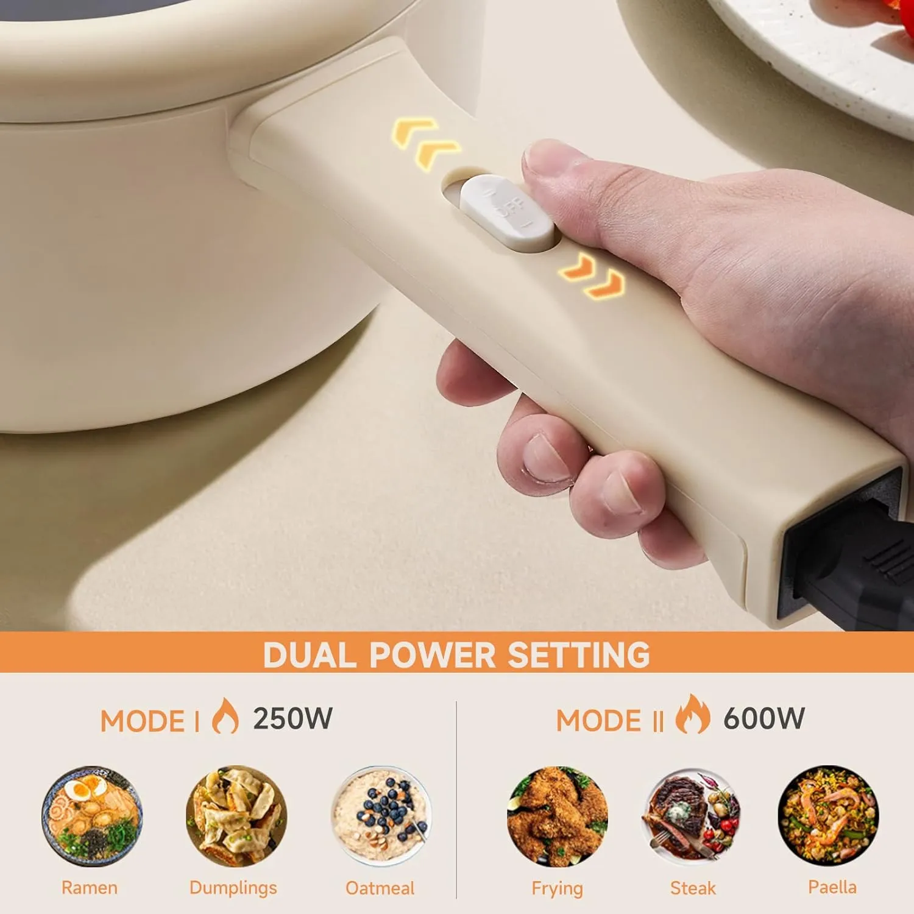
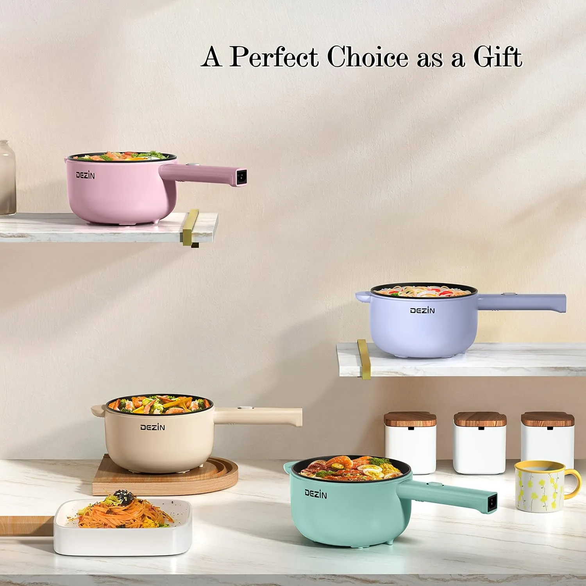
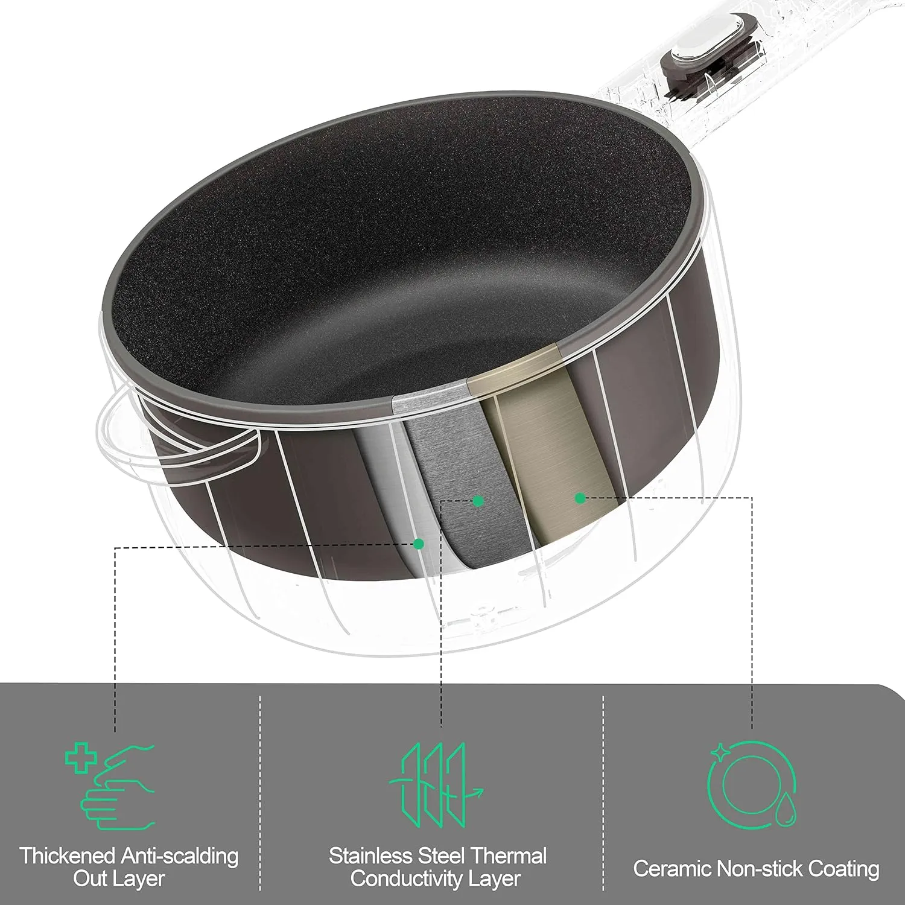
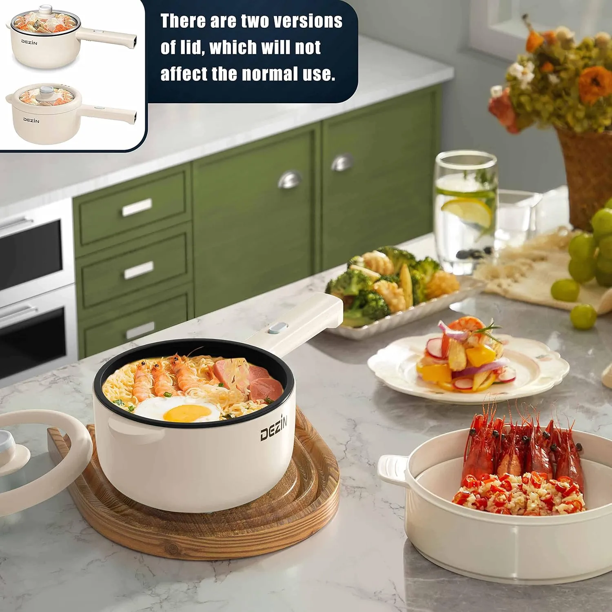
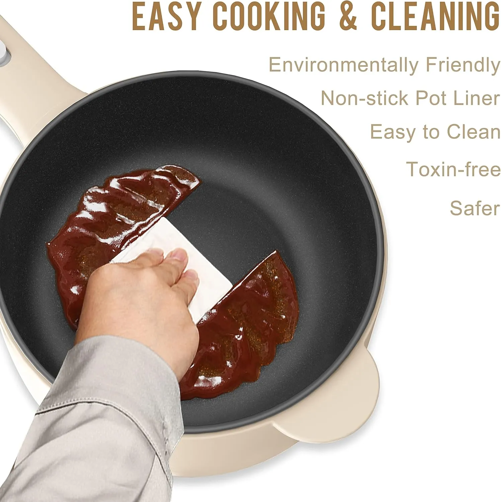

The little electric pot that makes no-stove meals feel doable.
Not every kitchen has a full stove, a stack of pans, or time for a real cleanup. The DEZIN Electric Hot Pot is built for small-space meals: ramen after class, eggs before work, soup on a cold night, oatmeal in a dorm room, or a quick one-pot dinner when takeout feels like the only option.
Small kitchens need meals that do not turn into projects.
A lot of people do not need a bigger kitchen. They need one compact tool that can handle the everyday meals they actually make. That is especially true for college dorms, studio apartments, shared rentals, office lunches, and small kitchens where counter space disappears fast.
This electric hot pot is not trying to replace a full kitchen. It is for the nights when you want something warm, quick, and realistic: ramen with an egg, sautéed vegetables, fried rice, oatmeal, soup, or a simple protein without pulling out three different pans.

Quick meals should not need a full cooking setup.
Sometimes the hardest part is not cooking. It is dragging out cookware, cleaning multiple dishes, and finding space to prep in a kitchen that already feels crowded.
When takeout becomes the backup plan too often.
Most people do not order takeout because they cannot cook. They order it because cooking feels like a whole event after a long day. You get home late, the sink already has dishes, the stove is busy, or the only pan you need is still dirty.
In a dorm room, the problem is even more obvious. You may not have a stove at all. In a shared apartment, kitchen space can feel like a negotiation. In a tiny studio, one pan can take over half the counter.
A small electric pot helps because it lowers the barrier. Instead of “cooking dinner,” the task becomes simple: plug it in, add ingredients, cook one small meal, and clean one pot.

It fits the way people actually eat in small spaces.
Dorm cooking is rarely perfect. It is late-night ramen, eggs before class, oatmeal when the dining hall feels too far away, and soup when the weather turns cold. Small apartment cooking is not much different: limited burners, limited counter space, and very little patience for extra cleanup.
The DEZIN hot pot works because it is compact and direct. It does not ask for a full cooking station. It gives you one contained place to boil, heat, sauté, and stir a meal together.
That makes it especially useful for students, young professionals, people in studio apartments, or anyone who wants a quick backup cooking option without committing to a big appliance.
- Good for ramen, eggs, oatmeal, soup, fried rice, simple sautéed meals, and leftovers.
- Fits better in dorm and apartment routines than bulky cookware.
- Useful when you want one warm meal without a pile of dishes after.

Not fancy. Just useful.
The best use for this hot pot is the kind of food people actually make when life is busy, the fridge is half full, and dinner needs to happen fast.
Add egg, frozen vegetables, leftover chicken, tofu, scallions, or a little sauce to make instant noodles feel more like a meal.
Use it for oatmeal, eggs, simple breakfast bowls, or warm leftovers before work or class.
Cook noodles, soup, fried rice, vegetables, or a simple protein when you do not want to use a full stove setup.
Helpful when you have access to an outlet and want something warmer than another cold lunch.
Useful when the stove is taken, the kitchen is crowded, or you want to avoid competing for cookware.
For the nights when cooking needs to be low-effort but you still want something better than snacks.
It is compact, so use it like a compact cooker.
The 2L size is part of the appeal, but it also means this is not for cooking a full family dinner. It is better for personal meals, dorm cooking, small batches, and simple one-pot food.
The power adjustment helps because not every meal needs the same heat. Boiling noodles is different from warming soup or sautéing eggs. The non-stick surface also helps keep cleanup manageable, especially when you are cooking food that would normally stick in a regular pot.
The realistic buyer is not someone replacing a full kitchen. It is someone who wants a compact cooking tool that gives them more options when the kitchen setup is limited.

Why this compact pot earns its counter space.
The value is not just that it heats food. The value is that it makes everyday small meals easier in places where cooking space is limited.
Compact enough for small spaces while still useful for ramen, soup, oatmeal, eggs, and simple meals.
The non-stick pot liner supports more than boiling, so you can make fried rice, eggs, or quick sautéed food.
Two power settings help match the heat to the meal, from quick boiling to gentler warming.
A small footprint makes it easier to keep in a cabinet, dorm shelf, or apartment kitchen corner.
It works best when you use it for the right kind of meals.
This is not the appliance for complicated recipes or big batch cooking. It shines when the meal is simple, warm, and personal: ramen with extras, eggs, rice bowls, soup, oatmeal, small vegetables, or leftovers that need a better refresh than the microwave.
It also makes sense for people who are tired of relying on takeout just because the kitchen setup is annoying. Sometimes the difference between ordering food and cooking at home is having a tool that makes the first step easy.
That is the real appeal here. It gives you a low-effort way to cook something quickly, clean up quickly, and move on with your night.

A smart little cooker for dorms, small kitchens, and quick comfort meals.
If your kitchen setup makes simple meals feel harder than they should, the DEZIN Electric Hot Pot gives you one compact place to cook ramen, eggs, soup, oatmeal, fried rice, and small one-pot dinners without turning dinner into a full kitchen project.
View on AmazonBefore adding an electric hot pot to your kitchen setup.
Is this good for a dorm room?
It can be a strong dorm cooking option, but always check your dorm rules first. Some campuses restrict cooking appliances.
What meals make the most sense?
Ramen, soup, eggs, oatmeal, fried rice, small vegetables, simple proteins, and quick one-pot meals are the best fit.
Can it replace a full stove?
No. It is better as a compact personal cooker or backup option, not a replacement for a full kitchen setup.
Is cleanup easier than regular cookware?
The non-stick liner helps reduce sticking, and cooking in one pot usually means fewer dishes afterward.
Who is this best for?
College students, small apartment renters, office lunch people, studio kitchen users, and anyone who wants quick warm meals with less cleanup.
What should I avoid?
Avoid treating it like a large cookware replacement. Keep portions realistic, follow the instructions, and do not leave it unattended while cooking.